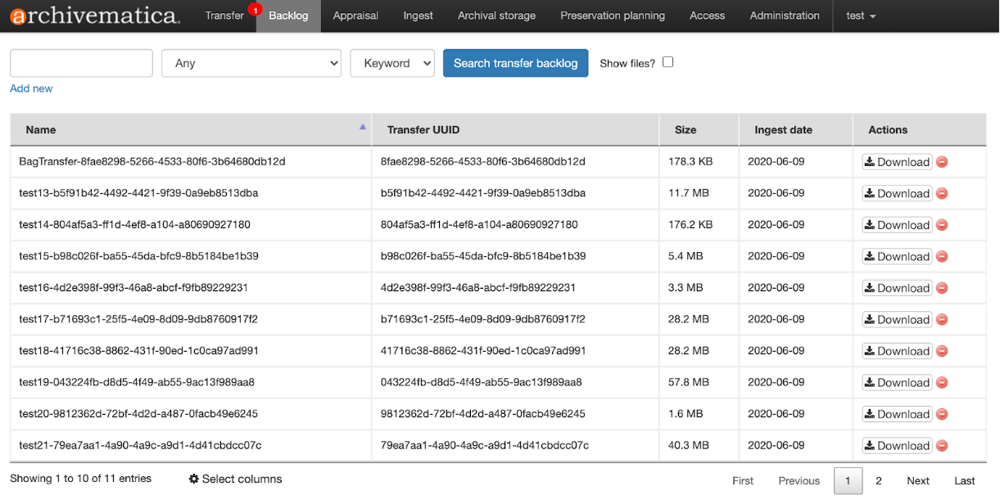
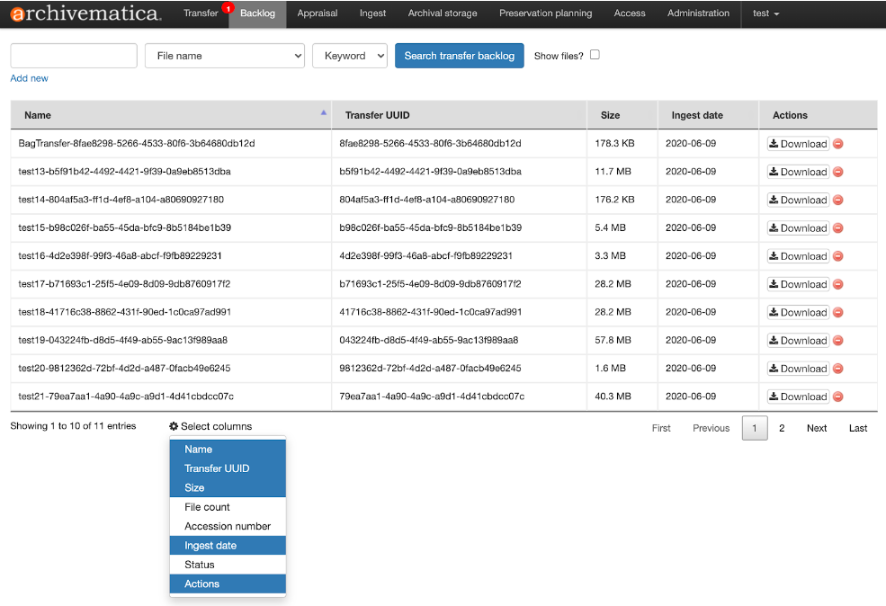
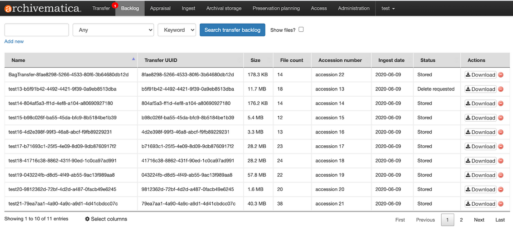
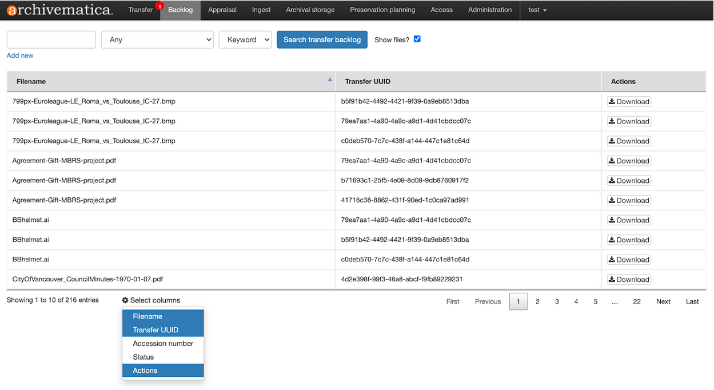
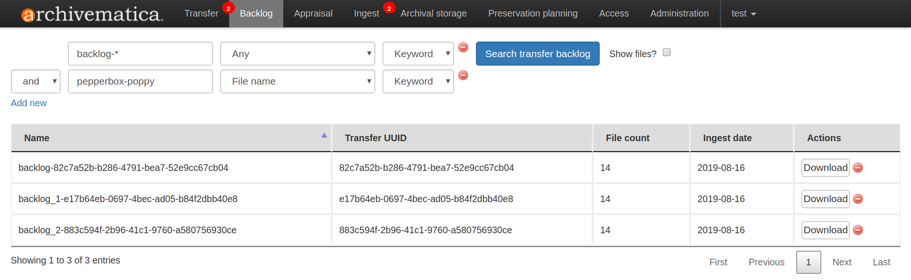
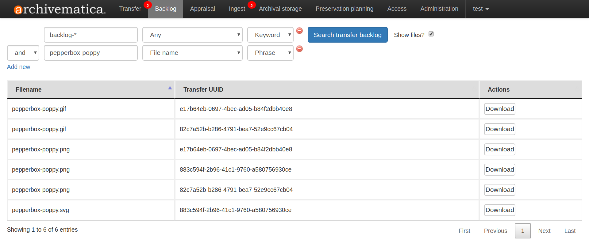
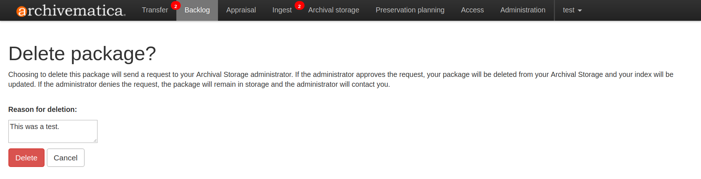

Backlog¶
Transferタブのマイクロサービス の最後に、ユーザーには転送をバックログ保存スペースに置くオプションが与えられます。このバックログは、後日Archivematicaの外部や、 [鑑定]タブ の機能を使って、長期保存する前に素材の分析を行うために使用できます。
バックログに置かれた転送は、基本的なデジタル保存マイクロサービスを受けています。たとえば、すべてのファイルに UUID が割り当てられ、チェックサムが生成され、ファイルのウイルススキャンが行われ、識別情報と妥当性確認情報がキャプチャされています。転送も バッグ に変換されました。
バックログタブに移動すると、ユーザーは、バックログに送られた転送の表示、検索、削除を要求できます。
注釈
Elasticsearch を使用せずに Archivematica を実行している場合、または Elasticsearch の機能が制限されている場合、ダッシュボードに [バックログ] タブが表示されないことがあります。
このページでは：
転送とファイルの検索¶
バックログタブには、バックログに送られたすべての転送のページ付きリストが表示されます。

バックログ転送の表形式リストで表示される列を変更するには、表の下部にある Select columns アイコンをクリックします。これにより、表で表示可能な列のリストが表示されます。青い行は、列が現在表示されていることを示します。白い行は、その列が現在表示されていないことを示します。

青または白の行をクリックして、列ごとにこの値を切り替えます。以下の例では、使用可能なすべての列が選択されています。列の選択内容は、ユーザー セッション間で保持され、同じ Archivematica インスタンスの他のユーザーに適用されることに注意してください。

列のヘッダーをクリックすると、昇順または降順に並べ替えることができます。上下のキャレット（矢印）が表示されます。（例：下記のファイル数を参照）
なお、「ファイルを表示しますか？」オプションを有効にした場合も、同じように列を選択できます。

ページ上部の検索フィールドを使用して、バックログを検索できます。ファイル名、ファイル拡張子、アクセッション番号、インジェスト date、Transfer UUIDのいずれかに限定して検索できます。検索パラメーターを"任意"に設定したままにしておくと、転送名から検索結果を表示もできます。 Add new をクリックすると、検索クエリに2つ目のブーリアン文字列を追加できます。

"バックログ"を含む転送名を持つ転送の検索結果とファイル名に "pepperbox-poppy" というフレーズが完全に含まれるファイルが含まれる ダッシュAND転送。¶
検索結果で個々のファイルを表示するには、 ファイルを表示しますか? の横にあるチェックボックスをクリックします

ファイルを表示しますか? が選択され、上記と同じ検索結果が表示されます。¶
{kind=link}
{kind=link}
{kind=link}
{kind=link}
{kind=link}
{kind=link}
{kind=link}
転送またはファイルのダウンロード¶
[アクション] 列の ダウンロード ボタンを選択すると、転送全体または個々のファイルをダウンロードできます。
転送は、tarパッケージとしてダウンロードされます。個々のファイルはパッケージ化されずにダウンロードされます。
転送の削除¶
保存されたAIPの削除 と同様に、バックログの転送の削除は、2段階のプロセスで行われます。フロントエンドユーザーは、バックログにある転送の削除をリクエストできますが、管理者は、Archivematica Storage Serviceにログインして削除を確認する必要があります。
転送の削除を依頼するには、「アクション」列の赤い削除アイコンをクリックします。
転送を削除する理由を入力するプロンプトが表示されます。理由を入力し、 Delete を選択します。

Storage Service管理者によって削除が確認されるまでは、転送はバックログタブに表示されたままとなり、まだダウンロード可能です。
{kind=link}
バックログからの転送の検索¶
バックログにある素材は、 「鑑定」タブ の機能を使用して、分析、鑑定、整理できます。バックログから転送し、長期保管のために処理する準備ができたら、「鑑定」タブ文書の 「ドラッグ＆ドロップでSIPを配列」 セクションの指示に従ってください。